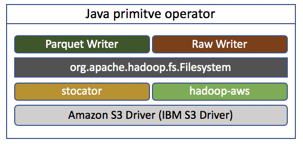

IBMStreams com.ibm.streamsx.objectstorage Toolkit > com.ibm.streamsx.objectstorage 2.1.8 > Protocol (client) selection

You may easily select one of the two S3 clients by specifying appropriate protocol in the objectStorageURI parameter. The URI should be in cos://bucket/ or s3a://bucket/ format. Replace bucket with the name of the bucket you created. Concretely, when s3a protocol is specified the toolkit uses hadoop-aws client. When cos protocol is specified the toolkit uses stocator client.
Note: The S3ObjectStorageSink, S3ObjectStorageSource and S3ObjectStorageScan operators have a protocol parameter for the client selection and a bucket parameter to specify the name of the bucket.
For ObjectStorageScan and ObjectStorageSource operator there is no big difference regarding the S3 client and you can select any of both clients. The ObjectStorageSink works different depending on the client selection.
Recommendation for client selection when writing objects in raw or parquet format:
When writing objects in partitioned parquet format both clients work similar and you may select one of the clients because of the different buffering mechanism: